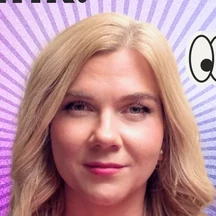

Нас интересует прагматичная история внедрения: с понятной бизнес-моделью, измеримыми результатами и реальной пользой для компании. Мы хотим отметить проект с осмысленным предпринимательским подходом к использованию генеративных технологий.
Кто наш фаворит?
Победителя определит редакция «Инка». Вот на что мы будем смотреть в первую очередь:
Доказанный финансовый эффект
Вы можете показать в цифрах, как ваш проект повлиял на выручку, сократил издержки или повысил другие ключевые бизнес-метрики.
Четкая бизнес-модель
Ваше решение имеет понятную модель монетизации и стратегию развития.
Решение реальной проблемы
Технология решает настоящую, а не выдуманную проблему клиентов или внутреннюю задачу бизнеса.
Предпринимательский подход
Вы использовали генеративный ИИ как осмысленный инструмент для достижения конкретных бизнес-целей.
Какой приз?
Победитель получит возможность рассказать о своем проекте на площадках Инк (сайт, соцсети), став героем одного из наших материалов.
«Мы в Инк пишем про ИИ ровно с того момента, как это перестало быть научной фантастикой и превратилось в рабочий инструмент предпринимателя. Для нас важно поддержать не просто технологичную, а именно осмысленную историю — ту, где нейросети решают реальные бизнес-задачи, экономят деньги или открывают новые рынки».

Ольга РаспоповаЗаместитель главного редактора медиа для предпринимателей Инк
Как принять участие?
Специально подавать заявку на эту номинацию не нужно. Редакция «Инка» рассмотрит все проекты, попавшие в шорт-лист премии.
Совет от организаторов: качественно заполните основную заявку, сделав акцент на бизнес-показателях, ROI и финансовом эффекте от внедрения вашего ИИ-решения.